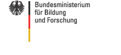

Todays Internet has a large economic influence but is based on legacy mechanisms and algorithms from the 70ies and 80ies. New applications have high demands for which the original Internet architecture was not designed for. The goal of the G-Lab project is to foster experimentally driven research to exploit Future Internet technologies.
The G-Lab project develops a Germany-wide research and experimental facility used to investigate the interplay between new technologies and the requirements of emerging applications. The project is funded by BMBF and initialy consisted of 6 partners. It started in October 2008 and runs for three years. The G-Lab testing facilities consist of wired and wireless hardware with over 170 nodes.
Real-World G-Lab is a 3 year project in the second phase of G-Lab which started in fall 2009 and ended in 2012. Its goal was to explore the integration of embedded computing platforms into the Future Internet.
Gefördert durch